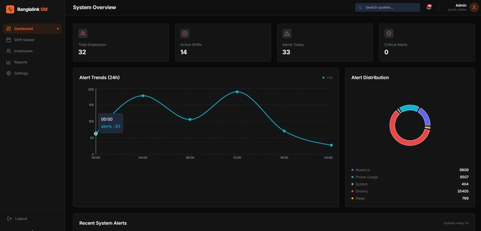
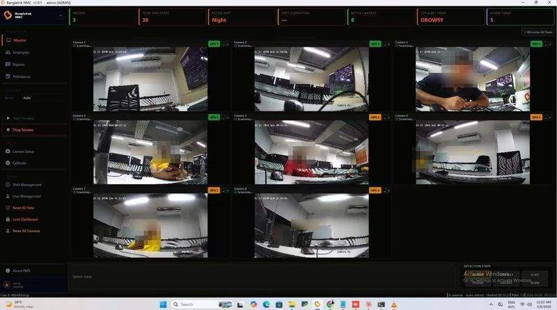

Operations dashboard — headcount, active shifts, alert trends and distribution.

The live wall — ten concurrent camera streams with per-feed behaviour flags.
Vision-based employee management system
AI & Computer Vision Engineer · Roboway Technologies for Banglalink Digital Communications · 2026
The largest system on this page, and the only one running in production for a national telecom operator. It processes ten live camera streams simultaneously, identifying employees, tracking attendance, detecting behaviour and absence, and raising security alerts on unknown persons — all in real time. Everything else here was built to win a competition or prove a thesis; this one had to survive continuous operation inside a company that depends on it.
- Scale
- 10 concurrent IP camera streams, continuous operation
- Vision
- YOLO, MediaPipe, FaceNet, MTCNN, FAISS, OpenCV, PyTorch, TensorRT
- Recognition
- Face detection, recognition and liveness (anti-spoofing)
- Detection
- Behaviour, absence, sleep and phone use; unknown-person alerting
- Backend
- Django, REST, Kafka, MongoDB, Redis, Docker, Nginx
Deployed at enterprise scale for Banglalink Digital Communications. Automates attendance and security monitoring that was previously manual administrative overhead.